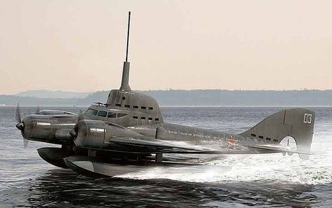

Літальні апарати
Щоб розповісти про підкорення повітряної стихії, Верн придумав Робур-завойовника. Цей невизнаний геній чимось нагадує Немо, але позбавлений романтики і благородства. Спочатку Робур створив повітряне судно «Альбатрос», яке піднімалося в повітря за допомогою пропелерів. Хоча зовні «Альбатрос» був схожий радше на звичайний корабель, його з повною підставою можна вважати «дідусем» вертольотів.
А в романі «Володар світу» Робур розробив і зовсім неймовірний транспортний засіб. Його «Грізний» був машиною-універсалом: з однаковою легкістю переміщався у повітрю, по землі, воді і навіть під водою - і при цьому міг рухатися зі швидкістю близько 200 миль на годину (в наші дні це звучить кумедно, але Верн вважав, що такий болід стане невидимим для людського ока). Ця універсальна машина так і залишилася вигадкою письменника. Наука відстає від Верна? Справа не тільки в цьому. Така машина-універсал просто непрактична і невигідна.
Спроби створити гібрид літака і підводного човна робилися. Причому, як не дивно, вдалі. У 1930-х радянські конструктори намагалися «навчити» гідролітак підводному плаванню, але проект не був доведений до кінця. А ось в США в 1968 році на нью-йоркській промисловій виставці продемонстрували прототип літаючої субмарини Aeroship. Застосування на практиці ця технічна дивина так і не знайшла.
